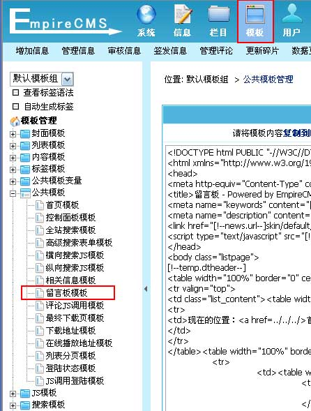
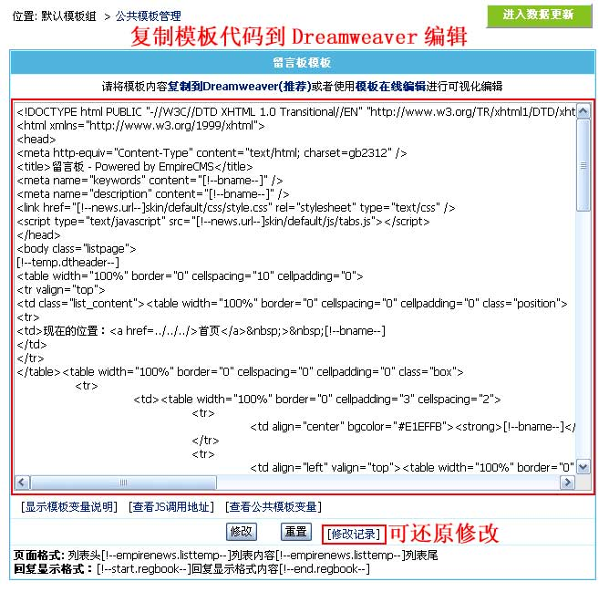
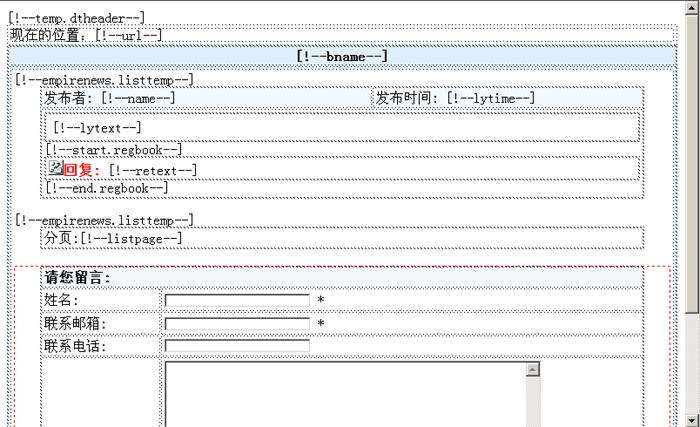

| 留言板模板为留言板插件页面的模板(/e/tool/gbook)。 |
|
| 留言板模板制作格式 |
| 模板页面格式： |
| 列表头 [!--empirenews.listtemp--] 列表内容 [!--empirenews.listtemp--] 列表尾 |
|
说明：第一个[!--empirenews.listtemp--]表示循环开始、第二个[!--empirenews.listtemp--]表示循环结束。 |
| 显示留言回复内容格式 |
| [!--start.regbook--] 回复显示格式内容 [!--end.regbook--] |
| 说明：这样没有回复就不显示回复内容及格式 |
| 留言板模板支持变量说明 |
| 1、整体页面支持的变量 |
| [!--newsnav--]：所在位置导航条 | [!--news.url--]：网站地址(参数设置的站点地址) | [!--class.menu--]：一级栏目导航 |
| [!--pagekey--]：页面关键字 | [!--pagedes--]：页面描述 | [!--bname--]：留言分类名称 |
| [!--bid--]：留言分类ID | [!--listpage--]：分页导航 | [!--num--]：总记录数 |
| 支持公共模板变量 | 支持PHP代码 |
| 2、列表内容支持的变量 |
| [!--lyid--]：留言ID | [!--name--]：留言者 | [!--email--]：留言者邮箱 |
| [!--call--]：留言者电话 | [!--lytime--]：留言时间 | [!--lytext--]：留言内容 |
| [!--retext--]：回复内容 | ||
| 支持PHP代码 |
| 修改留言板模板 |
| 1、登录后台，单击“模板”菜单，选择“留言板模板”子菜单，进入修改留言板模板界面： |
| 图片1：菜单导航  |
| 2、进入“修改留言板模板”界面，将模板代码复制到Dreamweaver编辑，如下图： |
|  |
| 3、把留言板模板复制到Dreamweaver后可进行可视化编辑，如下图： |
| 图1：设计视图  图2： 代码模式 
|
| 4、修改留言板模板后，复制页面的代码到后台的“留言板模板”文本框，然后点击“修改”即可修改完毕。 |
| 5、前台预览效果可访问：/e/tool/gbook/?bid=1 |